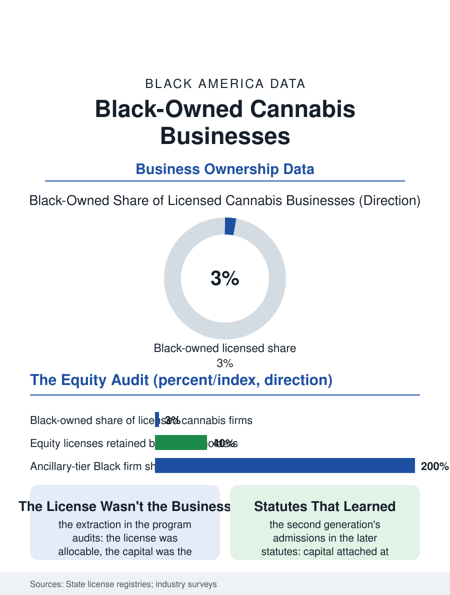

Black Business
The Equity Audit: Black-Owned Cannabis Businesses
The industry born with an equity mandate holds three percent Black ownership, its licenses extracted by the capital they required. The cannabis file.

Cannabis legalization created the first major American industry born with an equity mandate in its statutes, and the Black ownership results, a decade into the state experiments, are the mandate's report card: Black licensees hold a small single-digit share of the legal industry their communities' prohibition-era arrests were supposed to qualify them to own. This article reads the cannabis file.
The Equity License and the Capital Wall
The social equity programs' design was the file's founding idea: the licenses reserved, discounted, or prioritized for the applicants from the communities and the conviction records the drug war burdened, a reparative allocation written into the statutes of the pioneering states. The programs' outcome data compose the file's central tension: the license was the easy part of the business to allocate, and the capital was the business, the dispensary and the cultivation facility requiring millions in build-out under banking restrictions that excluded the industry from the ordinary credit system, so that the equity licensee's asset, the license itself, became the industry's acquisition target, the established operators' offers converting the reparative grant into the seller's one-time payment, a transaction whose terms the program evaluations record with the word extraction used by the programs' own auditors. The license counts that survive as genuinely Black-owned operating businesses in the mature markets run, in the industry surveys, in the vicinity of two to four percent of the total, against the equity statutes' intentions and against the arrest data's composition, the disparity the programs' second-generation redesigns, the low-interest state loan funds, the incubator mandates, the delivery and micro-license tiers with their lower capital thresholds, now attempt to engineer around.
Prohibition's Long Invoice
The file's background is the enforcement record itself, the context the advertiser-safe telling still requires: the marijuana arrest rates that ran at multiples of the white rate for the same usage rates across the prohibition decades, data the civil liberties analyses published annually, and the conviction records that the legal industry's background checks then used to exclude the very population the equity programs named, an absurdity the expungement and record-sealing reforms have spent a decade unwinding program by program. The Black cannabis entrepreneur's second inheritance is cultural: the plant's economy in the community, informal for generations, carried its own expertise, its genetics and its customers, and the legal industry's failure to convert that expertise, its preference for the credentialed outsider with the capital, is the file's business lesson in its purest form, the market rewarding the balance sheet over the knowledge in the industry where the knowledge was most unevenly distributed by law. The ancillary economy, the security, the testing, the packaging, the legal and accounting practices of the cannabis file's neighbors, admitted Black firms on the ordinary terms of the business section, and the community's cannabis wealth, such as the data show, sits disproportionately in those tiers rather than in the licensed plant-touching tier the equity debate watches.
The Second Generation's Design
The cannabis file closes on the redesigns' evidence, because the later states wrote their statutes from the pioneers' audits: capital funds attached to the licenses at the grant rather than promised after, ownership-retention requirements with teeth, the delivery and consumption lounge tiers' lower thresholds, and the municipal programs that pair the license with the premises in the city-owned incubator buildings, each an admission that the first design allocated the visible asset and withheld the operative one. The industry's consolidation continues beneath the policy, the multi-state operators' acquisition pace setting the file's clock: the window in which the equity allocation can still become an ownership class rather than a historical footnote is the current licensing rounds', and the data systems, the states' license registries now publishing the demographic counts the early states omitted, will record the result license by license. The census of businesses counts the cannabis firms in the young industry's categories, the Black share small and, in the redesigned states, measurable at last. The file's last entry is the statute's own test, written into the first laws and awaiting its result: an industry legalized in the name of repairing a racial harm will be judged, in the end, by the ownership table, and the table's current reading is the repair's invoice, mostly unpaid.
More in Black Business
Black-Owned Businesses: Counts, Receipts, and the Representation Gap
About 161,000 Black-owned employer firms and three million solo ventures: how the Census Bureau counts Black business ownership, where firms concentrate, and the gap between population share and business share.
Black Median Net Worth: The Wealth Gap in Federal Reserve Data
The Federal Reserve puts Black median family net worth at $44,900, against $285,000 for White families — about 16 cents on the dollar. The widest gap in economic data.
Black Buying Power: The $1.8 Trillion Consumer Economy
Black buying power is estimated at about $1.8 trillion — larger than the economy of most nations. What the figure measures, who produces it, and what it buys.
Source: State cannabis license registries and social equity program evaluations; Marijuana Business Daily industry ownership surveys.